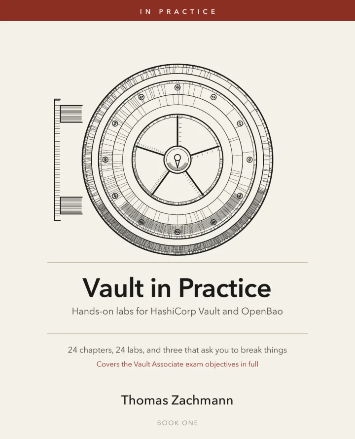

Vault in Practice
A Hands-On Lab Guide to HashiCorp Vault and OpenBao
Why this book
The gap is not conceptual
Engineers understand what Vault does within an hour, then spend months learning what the error messages mean, which defaults will hurt, and what happens at three in the morning when a cluster comes back sealed and nobody can find the third unseal key.
Twenty-four chapters, each ending in a working lab that runs on your laptop in Docker. No cloud account. No spare server. The book follows a fictional logistics company from passwords-in-Git to a production-shaped installation.
What you will do
- Split an encryption key with Shamir, then lose it on purpose
- Write policies that fail, and find out why in one command
- Issue database credentials that did not exist until asked for
- Run a certificate authority with 24-hour certificates
- Encrypt data without the application ever holding a key
- Break a Raft cluster's quorum, and put it back together
- Deliver secrets into Kubernetes four different ways
- Deploy OpenBao, and answer the licence question honestly
Every chapter ends with the real error messages, their causes and their fixes. Five chapters ask you to destroy your own setup, because nobody who has recovered a sealed cluster under pressure learned how from a reference manual.
Contents
Twenty-four chapters
- 1The Problem With Secrets
- 2Building Your Lab
- 3Initialise, Seal, Unseal
- 4The CLI, the API, and the UI
- 5Tokens
- 6Policies
- 7Authentication Methods
- 8Identity, Entities, and Groups
- 9Key/Value Secrets
- 10Dynamic Database Credentials
- 11Leases, Renewal, and Revocation
- 12Encryption as a Service
- 13Running Your Own CA
- 14Response Wrapping and Secret Zero
- 15Vault Agent
- 16Kubernetes Foundations
- 17Delivering Secrets into Pods
- 18OpenBao
- 19SSH, Cloud, and Other Engines
- 20Storage Backends
- 21High Availability and Raft
- 22Auto-Unseal
- 23Audit and Operations
- 24Production Checklist
Twelve appendices follow, among them a command reference, a troubleshooting guide, an exam objective map, a practice exam, a production readiness review and a chapter on migrating an existing estate.
Who it is for
Platform engineers, SREs and security engineers who will be responsible for a Vault installation — not for evaluating one. The book assumes you are comfortable on a Linux command line and with containers; it does not assume you have used Vault before.
It covers the Vault Associate exam objectives in full and ends with a practice exam, so it doubles as preparation without being written as a cram guide.
HashiCorp and Vault are trademarks of HashiCorp, Inc. This book is an independent publication and is not affiliated with, authorized by, sponsored by, or otherwise approved by HashiCorp, Inc.